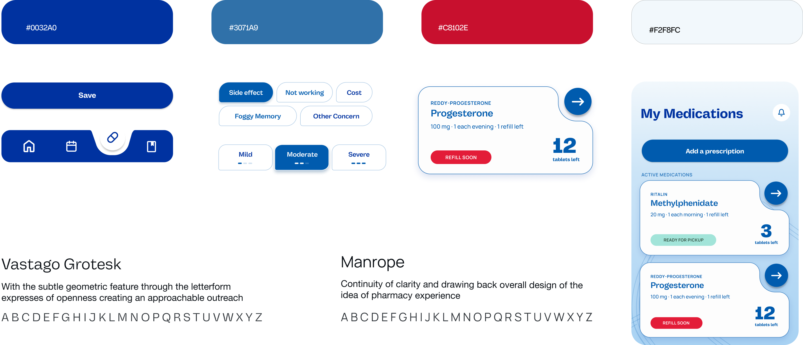
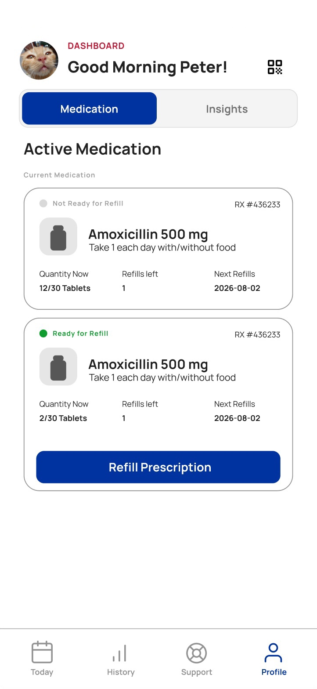
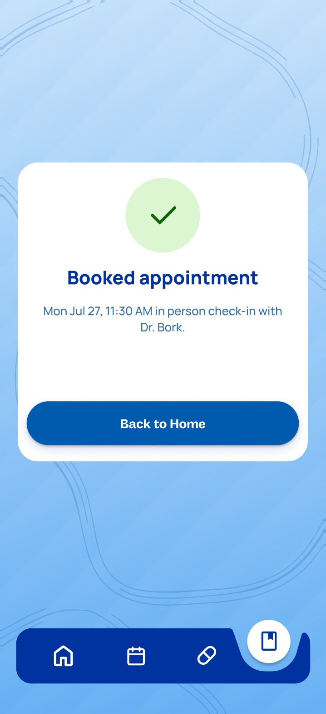

A home that says what’s next
Today’s dose with Taken or Remind me, and refill status before it’s urgent.
Why Testers couldn’t see what they had left or when to refill.
A medication companion for Costco Pharmacy members on long-term prescriptions, linking what happens at home back to their pharmacist.

People on long-term medication leave the pharmacy ready to start, then support disappears.
Costco Pharmacy already offers medication reviews, private counselling and minor-ailment care, but it presents them service by service, so members still treat it as a pickup point. Refills, appointments and tracking live apart, and nothing connects a side effect at home to the pharmacist.
How might we extend Costco Pharmacy’s relationship beyond the counter, so members on long-term medication feel supported during treatment?
Where care stops
Supported at the counter, on your own at home
At the counter
At home
Next pickup
Moderated tests with long-term medication users, Gen Z to 55+: log a symptom, prepare for a pharmacist, check what’s left to refill.
Our first version kept medications under Profile, booked pharmacist appointments and offered “Pal Insights”, AI notes on logged symptoms.
Medications hid under Profile, so testers couldn’t see what they had left or when to refill.
All five hit doubt over a booking, who to contact or where care info lived. None could tell if an appointment went through.
All five questioned the journal or “Pal Insights”. It read as an AI diagnosis, and testers worried about their data.
Moderated testing, round one
Five testers, three tasks
Who
Long-term medication users, Gen Z to 55+.
Tasks
What they told us
The final app keeps Costco’s red and blue, softened with rounded shapes.
Today’s dose with Taken or Remind me, and refill status before it’s urgent.
Why Testers couldn’t see what they had left or when to refill.

Every symptom ties to a medication. Members choose which logs their pharmacist sees, then see when they reply.
Why Nothing linked a side effect at home to the pharmacist, and testers didn’t know who to contact.

Straight from the reminder: no Rx number, pick a pickup location, add a note for the pharmacist.
Why A tester asked to see refills left, with a reminder to order more.
Each finding became a design change. A second session with two of the testers caught small touch targets, an X that read as delete and too much blue. One suggested plain rectangles instead of our rounded shapes; the other liked them but flagged accessibility. We kept the shapes, toned the interface down and made it consistent.
Out of Profile and into a tab of its own, with tablets left in large type.


Logging a symptom or booking an appointment ends on a clear confirmation and a next step.


Pal Insights became a plain pattern note that suggests a word with your pharmacist, never a diagnosis.

What I owned
Looking back
I proposed a dedicated medications area with refill status, modelled on Apple Health’s medication list. Testing backed it: all five testers valued seeing their medication status, and Max didn’t expect to find it under Profile. It became the Medications tab and the one-flow refill.
Test with pharmacists, since the app assumes they’ll read and reply to symptom logs, and check with Costco whether the QR pickup pass fits real pharmacy procedure. We flagged both to validate later.